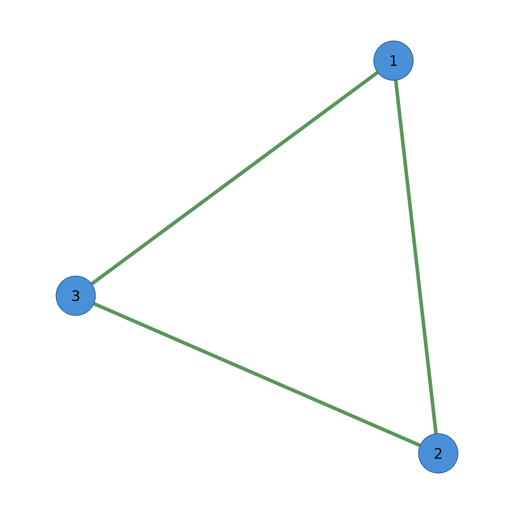

Apply a color palette for node and/or edge coloring.
Details
Available Palettes
Use list_palettes() to see all available palettes. Common options:
- viridis
Perceptually uniform, colorblind-friendly.
- colorblind
Optimized for color vision deficiency.
- pastel
Soft, muted colors.
- bright
Saturated, vivid colors.
- grayscale
Shades of gray.
You can also pass a custom palette function that takes n and returns
n colors.
Examples
adj <- matrix(c(0, 1, 1, 1, 0, 1, 1, 1, 0), nrow = 3)
# Apply palette to nodes
cograph(adj) |> sn_palette("viridis") |> splot()

# Apply to edges
cograph(adj) |> sn_palette("colorblind", target = "edges") |> splot()
# Apply to both
cograph(adj) |> sn_palette("pastel", target = "both") |> splot()
# Custom palette function
my_pal <- function(n) rainbow(n, s = 0.7)
cograph(adj) |> sn_palette(my_pal) |> splot()
# Direct matrix input
adj |> sn_palette("viridis")
#> Cograph Network
#> ==============
#> Nodes: 3
#> Edges: 3
#> Directed: FALSE
#> Weighted: FALSE
#> Layout: computed
#> Theme: classic
#>
#> Use plot() or sn_render() to visualize
#> Use sn_ggplot() to convert to ggplot2